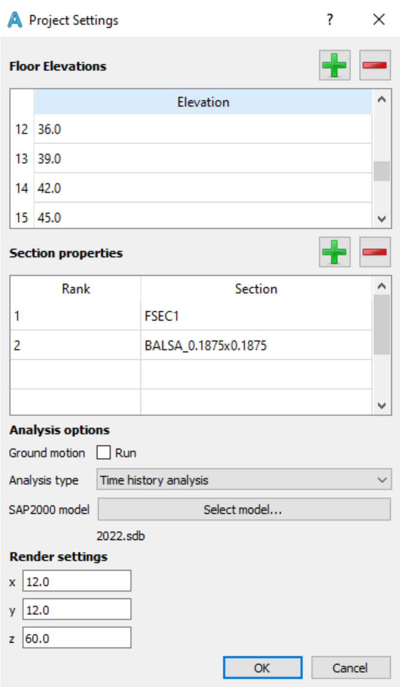
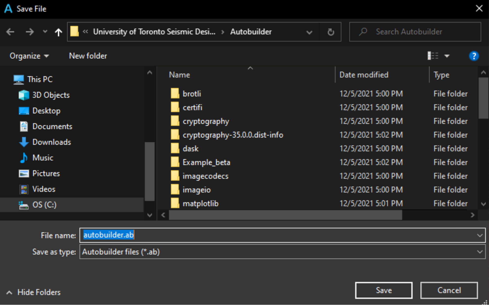
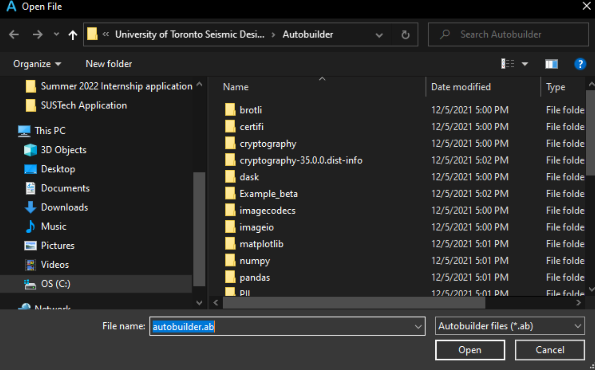
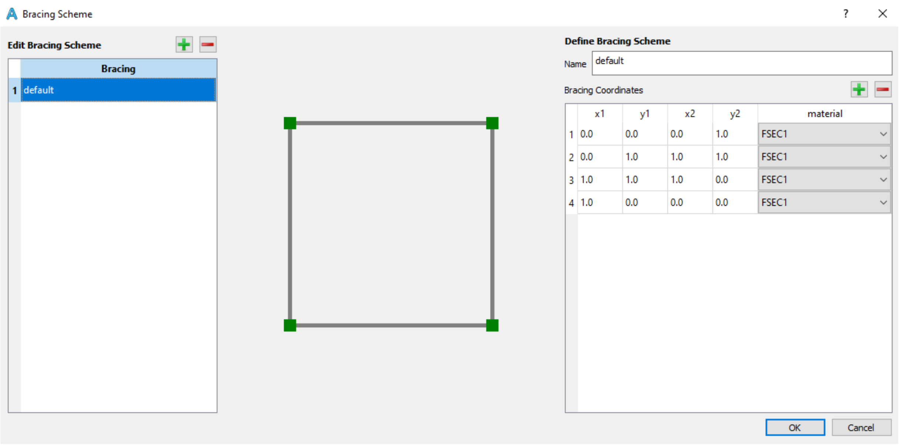
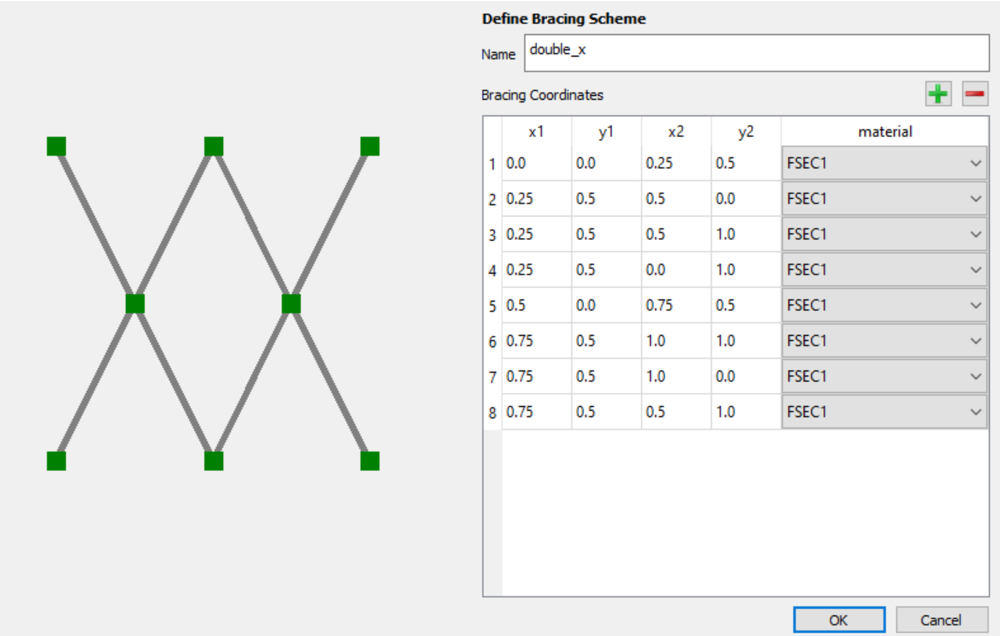
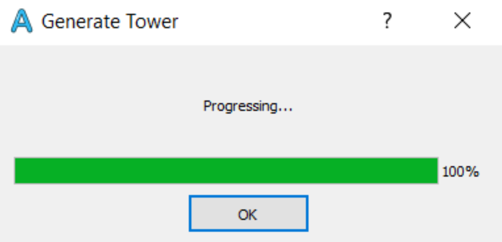

User Tutorial
Contents
Through this tutorial, you will learn how to optimize your tower design in SAP2000 using Autobuilder. This tutorial will also help to familiarize you with the program’s basic functions and features.
The required materials and finished product of this tutorial can be found in <C:Program Files (x86)University of Toronto Seismic Design TeamAutobuilderExample_beta>
Note
The SAP2000 model used in this tutorial is incomplete and only for demonstration purposes. See “Modelling in SAP2000” for an introductory SAP2000 modelling tutorial.
Save the Autobuilder file frequently throughout the tutorial if possible.
This section describes the process of setting up a new Autobuilder model.
1. Initializing a New Model
1.1 Initialize the Model

To start, go to Settings -> Project Settings / click
The Project Settings dialog shown below will appear.
- Enter the following
- Floor Elevations
0.0, 6.0, 9.0, 12.0, 15.0, 18.0, 21.0, 24.0, 27.0, 30.0, 33.0, 36.0, 39.0, 42.0, 45.0,
48.0, 51.0, 54.0, 57.0, 60.0 Note: Always include the elevations of the ground floor and the roof
- Section Properties
1: FSEC1
2: BALSA_0.1875x0.1875
- Analysis options
- Ground motion: uncheck “Run”
Note: To obtain the complete set of performance metrics, including roof
accelerations, displacements and base shear, check “Run”. Please ensure the ground motion is correctly defined in the SAP2000 model.
Analysis type: “Time history analysis”
SAP2000 model: “C:Program Files (x86)University of Toronto Seismic Design
TeamAutobuilderExample_betaSAP Model2022.sdb”
- Render settings
x: 12.0
y: 12.0
z: 60.0
Note: The input values should correspond to the maximum dimensions of your
tower
Press OK to return to the main window.

2. Main Window
This section describes the basic controls in the main window.
2.1 Save File

To start, go to File -> Save File…/ click
The Save File dialog shown below will appear.
- Save your current model
Directory: “C:Users<Your Name>Downloads” (Or any other folder)
Name: “Tutorial 1.ab”
2.2 Open File

To start, go to File -> Open File…/ click
The Open File dialog shown below will appear.
Open your previously saved model

2.3 Section View
The left portion of the main window consists of the section view of the tower as seen below. .. image:: images/section-view.png
Click or to move up or down a floor. “Z= X.X” represents the current floor elevation and will change accordingly.
changes the orientation of the panels
2.4 3-D View
The right portion of the main window consists of the 3-D view of the tower as seen below. .. image:: images/3-D-view.png
Click or to shift up or down.
Scroll up or down to zoom in or out.
Doublc click to resume to the original zoom level.
3. Bracing Schemes
This section details the steps to define bracing schemes. By default, there will be one pre-defined bracing scheme.
3.1 Create Bracing Schemes

To start, go to Edit -> Bracing Scheme/ click
The Bracing Scheme dialog shown below will appear.

Click at the left side of the dialog to create a new bracing scheme.
Rename “New Bracing 1” to “double_x”.
Enter the following coordinates and the material of each member in the table shown below.
Click to add a new row.
Select one or multiple rows and click to delete.
(Note: The following mathematical operations are allowed: +, -, *, /.)
Repeat the steps above for the “x” bracing scheme.
Press OK to return to the main window.
4. Floor Plans
This section details the steps to define floor plans. By default, there will be ten pre-defined floor plans.
4.1 Create/Edit Floor Plans
To start, go to Edit -> Floor Plan/ click .
The Floor Plan dialog shown below will appear.
Select all the existing floor plans click to delete.
Create a new floor plan by clicking next to “Edit Floor Plan” and rename it to “Floor_1_7”.
- Enter the following information in the new floor plan:
X Y Coordinates
Members
- Repeat the steps above for the rest of floor plans:
- Floor plan name: Floor_8_10_16_19
X Y Coordinates
X
Y
Bottom
Top
0
0
1
1
12
0
2
2
12
12
3
3
0
12
4
4
Members
Start
End
1
2
2
3
3
4
4
1
- Floor plan name: Floor_11_15
X Y Coordinates
X
Y
Bottom
Top
3.25
3.25
1
1
8.75
3.25
2
2
8.75
8.75
3
3
3.25
8.75
4
4
4.2 Assign Floor Plans to Elevation
To start, go to Assign Elevation.
The table shown below will appear.
Enter the name of th floor plans to their corresponding elevations
Elevation
1st Layer
2nd Layer
0.0
Floor_1_7
6.0
Floor_1_7
9.0
Floor_1_7
12.0
Floor_1_7
15.0
Floor_1_7
18.0
Floor_1_7
21.0
Floor_1_7
Floor_8_10_16_19
24.0
Floor_8_10_16_19
27.0
Floor_8_10_16_19
30.0
Floor_11_15
33.0
Floor_11_15
36.0
Floor_11_15
39.0
Floor_11_15
42.0
Floor_11_15
45.0
Floor_11_15
48.0
Floor_11_15
51.0
Floor_8_10_16_19
54.0
Floor_8_10_16_19
57.0
Floor_8_10_16_19
60.0
Floor_8_10_16_19
1st Layer: Primary floor plan
2nd Layer: Secondary floor plan which is directly on top of the 1st Layer
Note: The nearest floor plans will be connected. For instance, Floor_8_10_16_19 at
elevation 21.0 will be connected to Floor_8_10_16_19 at elevation 24.0, while Floor_1_7 at elevation 21.0 will be connected to Floor_1_7 at elevation 18.0.
4.3 Define Location of the Centre of Mass (COM)
The locations of the COMs are important for the center of rigidity calculation, which is used to evaluate the performances of towers with asymmetrical floor plans.
To start, go to Centre of Mass.
The table shown below will appear.
Enter the followings:
Elevation
X
Y
0.0
6.0
6.0
6.0
6.0
6.0
9.0
6.0
6.0
12.0
6.0
6.0
15.0
6.0
6.0
18.0
6.0
6.0
21.0
6.0
6.0
24.0
6.0
6.0
27.0
6.0
6.0
30.0
6.0
6.0
33.0
6.0
6.0
36.0
6.0
6.0
39.0
6.0
6.0
42.0
6.0
6.0
45.0
6.0
6.0
48.0
6.0
6.0
51.0
6.0
6.0
54.0
6.0
6.0
57.0
6.0
6.0
60.0
6.0
6.0
Press OK to return to the main window
5. Panels
This section details the steps to create and edit panels. Panels are boxes/quadrilaterals that define the design locations of the braces.
5.1 Generate Panels from Floor Plans
Go to Edit -> Generate Panel -> with Floor Plan
The generated panels will be shown in the section view.
5.2 Edit Panels
To start, go to Edit -> Panel/ click .
The Panel dialog shown below will appear.
Click and select a panel in the table on the left. The selected panel will be shown in the 3D viewer.
- Other tips:
Give the panel a name with meaning (e.g. “Floor_1_East”). This will help later when we
assign the panels to the bracing groups. * Change the coordinates of existing panels or create new panels for bracings that are designed to span multiple floors.
Press OK to return to the main window.
6. Design Variables
This section details the steps to create and edit design variable groups, including bracings and member sections.
6.1 Define Bracing Group
Go to Edit -> Design Variable/ click .
The Design Variables dialog shown below will appear.
Click above the left column to create a new bracing group and rename it to “x_double_x”.
Click above the right column to create a new variable. Select “double_x” from the drop- down.
Create another variable and select “x”.
6.2 Define Section Group
Click the “Section Group” tab.
- Repeat the same steps for the new section group.
Section Group Name: “0.1875_FSEC1”
- Variable:
FSEC1
BALSA_0.1875x0.1875
Press OK to return to the main window.
7. Variable Assignment
This section details the steps to assign the bracing and member section design variable groups.
7.1 Assign Bracing Design to Panel
Go to Edit -> Variable Assignment/ click .
The Variable Assignment dialog shown below will appear.
Click .
Select “x_double_x” in the drop-down for Panel “1”.
Alternatively, click “Import .csv”.
- Select and import
Directory: “C:Users<Your Name>Downloads” (or the folder which the model is saved
in) * Name: “bracing_assignments.csv”
- Format of the import file for bracing assignment:
1st column: Panel Name
2nd column: Bracing Group Name
Note: No header required
The Bracing Assignment table will be filled as seen below.
7.2 Assign Member Section to Members
Go to Section Assignment
- Click “Import .csv” and select
Directory: “C:Users<Your Name>Downloads” (or the folder which the model is saved in)
Name: “section_assignments.csv”
- Format of the import file for section assignment:
- 1st column: Member ID in SAP2000 model
Note: Need to obtain directly from SAP2000
2nd column: Section Group Name
In this tutorial, section assignment is not required. Thus, select all section assignments and click to delete.
Press OK to return to the main window.
8. Generate Tower
This section details the steps to generate tower designs.
8.1 Generate Towers

Go to Analysis -> Generate Towers/ click .
The Generate Tower dialog shown below will appear.
Press OK to return to the main window.
8.2 Additional Information
All possible tower designs will be generated based on the permutations of selected bracing designs/member sections and the associated panels/member IDs.
In our case, there is one bracing group that contains two bracing designs, including “double_x” and “x”. This bracing group is assigned to all panels. Therefore, a total of two tower designs will be generated.
- Open the input table file in File Explorer.
Directory: “C:Users<Your Name>Downloads” (or the folder which the model is saved
in) * Name: “inputTable.csv”
The following table should appear in Excel.

- Format of input table:
towerNumber: the number ID of the tower.
Variable-<XXX>: the bracing design/member section in variable group XXX that was used
in the tower. * Panel <X>: the bracing design that was assigned to panel X.
9. Run Tower
This section details the steps to model and run analysis on all the tower designs in SAP2000.
9.1 Run Towers
Go to Analysis -> Run Towers/ click .
The Run Towers dialog shown below will appear. .. image:: images/run-towers.png * SAP2000 Path
Must match the SAP2000.exe installed on your computer.
- Nodes to Analyze
Format: <ID1>,<ID2>,<ID2>…
Enter the IDs of nodes of interest, typically the roof nodes.
Maximum accelerations and displacements will be measured from these nodes.
Node IDs need to be obtained from the previously selected SAP2000 model.
Note: May be ignored if “Ground Motion” is unchecked in Project Settings.
- Footprint (sq in)
Total footprint of the tower.
- Total Height (in)
Total height of the tower.
- Total Mass (kg)
Total mass/weights on the tower.
- Ground Motion Identifier
Maximum acceleration, displacement and base shear are obtained when the
tower is subjected to load combinations containing the identifier/keyword (e.g. D+GM1-NS) * Note: May be ignored if “Ground Motion” is unchecked in Project Settings.
Verify if the SAP2000 Path is correct. Do not change other inputs.
Click “Run Now”.
The Build Towers dialog shown below will appear.

After completing the analysis:
Close the Build Towers dialog and open the plot of tower performances.